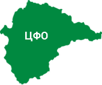

Oбщая
информация
ПРОЕКТ СТАРТОВАЛ В ИЮНЕ 2014 ГОДА
И К НАЧАЛУ 2015 ГОДА В СОДРУЖЕСТВО «ВЕСНА» ВСТУПИЛО УЖЕ БОЛЕЕ 500 АПТЕК
ИЗ 6 ФЕДЕРАЛЬНЫХ ОКРУГОВ РФ
С самого начала мы поставили перед собой
амбициозную задачу:
Объединить мелкосетевую (3-5 аптек) и несетевую аптечную розницу на всей территории РФ с целью повышения эффективности работы этих аптек с производителями. Так и родилась идея создать аптечную ассоциацию нового типа - «ВЕСНА». Ведь мелкосетевая и несетевая аптечная розница это больше половины всех аптечный учреждений в России, а их по разным источникам от 50 до 65 тысяч.
Объединить мелкосетевую (3-5 аптек) и несетевую аптечную розницу на всей территории РФ с целью повышения эффективности работы этих аптек с производителями. Так и родилась идея создать аптечную ассоциацию нового типа - «ВЕСНА». Ведь мелкосетевая и несетевая аптечная розница это больше половины всех аптечный учреждений в России, а их по разным источникам от 50 до 65 тысяч.
-
Наличие собственного
штата представителей в регионахОдной из важных особенностей проекта является наличие собственного штата представителей в регионах, которые не только занимаются развитием базы аптек в ввереном регионе, но и постоянно контролируют выполнение аптеками их обязательств по договорам. Что делает возможным выстраивание максимально открытых и прозрачных взаимоотношений с производителем.
-
Четкая категоризация
аптек в содружествеВсе аптеки входящие в Содружество имеют четкую категоризацию (по регионам, оборотам, по ассортименту и т.д.), что позволяет наиболее выгодно представить портрет целевой аудитории для производителя.
«Весна» сегодня
«География покрытия»
Дальневосточный
Федеральный округ
объем розничного рынка - 2.340.540.000.00 руб./год общее количество аптечных учреждений региона - 664 количество аптек в проекте «ВЕСНА» - 67 объем розничного рынка в проекте ВЕСНА - 396.315.450.00 руб./год
Сибирский
Федеральный округ
объем розничного рынка - 100.638.385.375.00 руб./год общее количество аптечных учреждений региона - 7.910 количество аптек в проекте «ВЕСНА» - 238 объем розничного рынка в проекте ВЕСНА - 3.101.777.901.00 руб./год
Уральский
Федеральный округ
объем розничного рынка - 63.449.463.550.00 руб./год общее количество аптечных учреждений региона - 4.987 количество аптек в проекте «ВЕСНА» - 85 объем розничного рынка в проекте ВЕСНА - 1.802.4012.230.00 руб./год
Северо-западный
Федеральный округ
объем розничного рынка - 71.374.226.275.00 руб./год общее количество аптечных учреждений региона - 5.600 количество аптек в проекте «ВЕСНА» - 110 объем розничного рынка в проекте ВЕСНА - 1.401.950.000.00 руб./год
Приволжский
Федеральный округ
объем розничного рынка - 155.764.967.325.00 руб./год общее количество аптечных учреждений региона - 11.832 количество аптек в проекте «ВЕСНА» - 8 объем розничного рынка в проекте ВЕСНА - 33.913.562.00 руб./год
Цнтральный
Федеральный округ
объем розничного рынка - 201.359.001.800.00 руб./год общее количество аптечных учреждений региона - 15.826 количество аптек в проекте «ВЕСНА» - 119 объем розничного рынка в проекте ВЕСНА - 1.630.805.140.00 руб./год
Южный
Федеральный округ
объем розничного рынка - 75.544.129.900.00 руб./год общее количество аптечных учреждений региона - 5.702 количество аптек в проекте «ВЕСНА» - 28 объем розничного рынка в проекте ВЕСНА - подписание договоров
Северо-Кавказский
Федеральный округ
объем розничного рынка - 49.600.450.525.00 руб./год общее количество аптечных учреждений региона - 3.898 количество аптек в проекте «ВЕСНА» - 3 объем розничного рынка в проекте ВЕСНА - подписание договоров
Крымский
Федеральный округ
объем розничного рынка - 10.233.183.400.00 руб./год общее количество аптечных учреждений региона - 804 количество аптек в проекте «ВЕСНА» - на стадии подписания договорв объем розничного рынка в проекте ВЕСНА - подписание договоров
-
Сибирский
Федеральный округобъем розничного рынка - 100.638.385.375.00 руб./год
общее количество аптечных учреждений региона - 7.910
количество аптек в проекте «ВЕСНА» - 238
объем розничного рынка в проекте ВЕСНА - 3.101.777.901.00 руб./годобъем розничного рынка - 100.638.385.375.00 руб./год
бщее количество аптечных учреждений региона - 7.910
количество аптек в проекте «ВЕСНА» - 238
объем розничного рынка в проекте ВЕСНА - 3.101.777.901.00 руб./год -

Центральный
Федеральный округобъем розничного рынка - 201.359.001.800.00 руб./год
общее количество аптечных учреждений региона - 15.826
количество аптек в проекте «ВЕСНА» - 119
объем розничного рынка в проекте ВЕСНА - 1.630.805.140.00 руб./годобъем розничного рынка - 201.359.001.800.00 руб./год
общее количество аптечных учреждений региона - 15.826
количество аптек в проекте «ВЕСНА» - 119
объем розничного рынка в проекте ВЕСНА - 1.630.805.140.00 руб./год -
Северо-западный
Федеральный округобъем розничного рынка - 71.374.226.275.00 руб./год
общее количество аптечных учреждений региона - 5.600
количество аптек в проекте «ВЕСНА» - 110
объем розничного рынка в проекте ВЕСНА - 1.401.950.000.00 руб./годобъем розничного рынка - 71.374.226.275.00 руб./год
общее количество аптечных учреждений региона - 5.600
количество аптек в проекте «ВЕСНА» - 110
объем розничного рынка в проекте ВЕСНА - 1.401.950.000.00 руб./год -
Уральский
Федеральный округобъем розничного рынка - 63.449.463.550.00 руб./год
общее количество аптечных учреждений региона - 4.987
количество аптек в проекте «ВЕСНА» - 85
объем розничного рынка в проекте ВЕСНА - 1.802.4012.230.00 руб./годобъем розничного рынка - 63.449.463.550.00 руб./год
общее количество аптечных учреждений региона - 4.987
количество аптек в проекте «ВЕСНА» - 85
объем розничного рынка в проекте ВЕСНА - 1.802.4012.230.00 руб./год -
Дальневосточный
Федеральный округобъем розничного рынка - 2.340.540.000.00 руб./год
общее количество аптечных учреждений региона - 664
количество аптек в проекте «ВЕСНА» - 67
объем розничного рынка в проекте ВЕСНА - 396.315.450.00 руб./годобъем розничного рынка - 2.340.540.000.00 руб./год
общее количество аптечных учреждений региона - 664
количество аптек в проекте «ВЕСНА» - 67
объем розничного рынка в проекте ВЕСНА - 396.315.450.00 руб./год -
Южный
Федеральный округобъем розничного рынка - 75.544.129.900.00 руб./год
общее количество аптечных учреждений региона - 5.702
количество аптек в проекте «ВЕСНА» - 28
объем розничного рынка в проекте ВЕСНА - подписание договоровобъем розничного рынка - 75.544.129.900.00 руб./год
общее количество аптечных учреждений региона - 5.702
количество аптек в проекте «ВЕСНА» - 28
объем розничного рынка в проекте ВЕСНА - подписание договоров -
Приволжский
Федеральный округобъем розничного рынка - 155.764.967.325.00 руб./год
общее количество аптечных учреждений региона - 11.832
количество аптек в проекте «ВЕСНА» - 8
объем розничного рынка в проекте ВЕСНА - 33.913.562.00 руб./годобъем розничного рынка - 155.764.967.325.00 руб./год
общее количество аптечных учреждений региона - 11.832
количество аптек в проекте «ВЕСНА» - 8
объем розничного рынка в проекте ВЕСНА - 33.913.562.00 руб./год -
Северо-Кавказский
Федеральный округобъем розничного рынка - 49.600.450.525.00 руб./год
общее количество аптечных учреждений региона - 3.898
количество аптек в проекте «ВЕСНА» - 3
объем розничного рынка в проекте ВЕСНА - подписание договоровобъем розничного рынка - 49.600.450.525.00 руб./год
общее количество аптечных учреждений региона - 3.898
количество аптек в проекте «ВЕСНА» - 3
объем розничного рынка в проекте ВЕСНА - подписание договоров -
Крымский
Федеральный округобъем розничного рынка - 10.233.183.400.00 руб./год
общее количество аптечных учреждений региона - 804
количество аптек в проекте «ВЕСНА» - на стадии подписания договорв
объем розничного рынка в проекте ВЕСНА - подписание договоровобъем розничного рынка - 10.233.183.400.00 руб./год
общее количество аптечных учреждений региона - 804
количество аптек в проекте «ВЕСНА» - на стадии подписания договорв
объем розничного рынка в проекте ВЕСНА - подписание договоров
| Федеральный округ | объем розничного рынка (руб./год) | общее кол-во аптечных учреждений региона | кол-во аптек в проекте «весна» | объем розничного рынка в проекте «весна» (руб./год) |
|---|---|---|---|---|
| Сибирский | 100.638.385.375.00 | 7.910 | 238 | 3.101.777.901.00 |
| Центральный | 201.359.001.800.00 | 15.826 | 119 | 1.630.805.140.00 |
| Северо-западный | 71.374.226.275.00 | 5.600 | 110 | 1.401.950.000.00 |
| Уральский | 63.449.463.550.00 | 4.987 | 85 | 1.802.4012.230.00 |
| Дальневосточный | 2.340.540.000.00 | 664 | 67 | 396.315.450.00 |
| Южный | 75.544.129.900.00 | 5.702 | 28 | На стадии подписания договоров с аптеками |
| Приволжский | 155.764.967.325.00 | 11.832 | 8 | 33.913.562.00 |
| Северо-Кавказский | 49.600.450.525.00 | 3.898 | 3 | На стадии подписания договоров с аптеками |
| Крымский | 10.233.183.400.00 | 804 | - | На стадии подписания договоров с аптеками |

Александр Фридман
Генеральный директор DENIS Pharm Group
Член Российской Ассоциации Фармацевтического Маркетинга (РАФМ)
Александр Фридман
Генеральный директор DENIS Pharm Group
Член Российской Ассоциации Фармацевтического Маркетинга (РАФМ)
Образование
Образование
карьера
и denis pharm group
В 2001 году основал группу компаний DENIS Pharm Group. DENIS Pharm Group оказывает полный спектр маркетинговых услуг по выведению и активному продвижению продуктов лекарственного и нелекарственного ассортимента на фармацевтическом рынке России, Украины и Казахстана. Компания имеет филиалы на Украине (DENIS Pharm Ukraine) и в Прибалтике (DENIS Pharm Baltija). За период своей деятельности компания DENIS Pharm Group провела более 300 трейд-маркетинговых мероприятий в аптеках, и организовала
работу более 600 медицинских представителей на территории РФ для работы в различных фармацевтических компаниях. DENIS Pharm Group сотрудничает с крупнейшими фармацевтическими производителями, среди которых Takeda/Nycomed, MEDA, Teva, Bayer, Wörwag Pharma, Natur Produkt, Novartis Pharma, Novartis Consumer Health, Boehringer Ingelheim, Sandoz, Berlin Chemie, Dr. Reddy’s, GlaxoSmithKline, KRKA, НПФФ Полисан, Фармстандарт и другие.